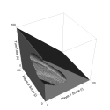
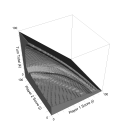
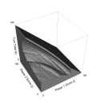
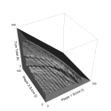
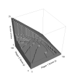

|
Pig Variant Solution Visualizations( home | game | solution | links ) |
Below are solutions of several Pig variants. In each visualization, the surfaces shown represent the boundaries between situations in which one should roll or hold. The axes are your score (Player 1), the opponent's score, and your current turn total. In the VRML links, the solution to each variant is shown in blue, with the original Pig solution shown in semi-transparent white.
For all variants, we have made the uniform assumption that the first player to 100 points wins. Some variants actually have slightly different winning conditions, e.g. allowing all players to have the same number of turns. For detailed variant descriptions and technical details of these solutions, see
| Thumbnail | Description | Media |
|---|---|---|
|  | Pig Dice® (© 1942 Parker Prothers) is a 2-dice variant of Pig that has had surprisingly little influence on the rules of modern variants. This is in part due to the fact that the game requires specialized dice. One die is a standard die with a pig head replacing the 1. The other is a standard die with a pig tail replacing the 6. Such rolls are called Heads and Tails, respectively. As before, players may hold or roll, risking accumulated turn totals. However, there is no undesirable single die value in this game. Rather, rolling dice that total 7 ends the turn without scoring. Rolling a Head and a Tail doubles the current turn total. Rolling just a Head causes the value of the other die to be doubled. Rolling just a Tail causes the value of the other die to be negated. The turn total can never be negative. If a negated die would cause a negative turn total, the turn total is set to 0. All other non-7 roll totals are added to the turn total. |
Image Animation VRML |
|  | 2-Dice Pig - According to game analyst Bill Butler, one of the simplest and most common variants, which we will call 2-dice Pig, was produced commercially under the name "Pig" around the 1950's. The rules are the same as our 1-die Pig except:
Skunk® (© 1953 W.H. Schaper Manufacturing Co.) is a commercial variant which elaborates on this with a chip penalty system. |
Image Animation VRML |
|  | Frey's Pig - In his book "How to Win at Dice Games", Skip
Frey describes a 2-dice Pig variation that
differs only in how doubles are treated.
|
Image Animation VRML |
| Big Pig - In his book "Dice Games Properly Explained", Reiner Knizia describes this variant, which is identical to Frey's pig except that the player's turn continues after scoring 25 from a double-1 roll. |
Image Animation VRML |
|
|  | Pass the Pigs® (© 1995 David Moffat Enterprises and
Hasbro, Inc.) - A popular commercial variant, Pass the Pigs was
designed by David Moffat in 1977 as PigMania® (© 1977 David
Moffat Enterprises). In this variant, small rubber pigs are used as
dice. When rolled, each pig can come to rest in a variety of
positions with varying probability: on its right side, on its left
side, upside down ("razorback"), upright ("trotter"),
balanced on the snout and front legs ("snouter"), and balanced
on the snout, left leg, and left ear ("leaning jowler"). This
approximate solution is derived from the pig dice roll data given here. (We
assume the probability for an "oinker", two pigs leaning on one
another, is 0, since such data is not given and the dice can be thrown
such that this is an exceedingly rare event.) The combined positions
of the two pigs lead to various scores.
Pass the Pigs is similar to 2-dice Pig, in that a roll of left side and right side has the same consequences as rolling a 1 (i.e., the turn ends with the loss of the turn total), and a roll with pigs touching has the same consequences as rolling two 1's (i.e., the turn ends with the loss of the turn total and score). Pass the Pigs is similar to Frey's variant in that two pigs in the same non-side configuration score double what they would individually. |
Image Animation VRML |
| Piggy - In the May/June 2000 issue of Muse Magazine, Ivars Peterson describes Piggy, which varies from 2-dice Pig in that there is no bad dice value. However, doubles have the same consequences as a single 1 in 2-dice Pig. |
Image Animation VRML |
|
| Piggy Sevens - This original variant varies from 2-dice Pig in that there is again no bad dice value. However, a sum of 7 has the same consequences as a single 1 in 2-dice Pig. |
Image Animation VRML Comparison of Piggy versus Piggy Sevens |
|
|  | Hog - Hog is best described as Pig where one must commit to a number of dice rolls at the beginning of the turn. In each turn of Hog, one chooses any number of dice and rolls them all at once. (The optimal player will need at most 26 dice.) The sum of the dice is scored if and only if no 1's are rolled. While technically not a jeopardy dice game, Hog is nonetheless strongly related to Pig, as can be seen by comparing the optimal number of dice to roll versus the shape of Pig's roll/hold boundary. |
Image |
Authors: Clif Presser and Todd Neller
{kind=link}
{kind=link}
{kind=link}
{kind=link}
{kind=link}
{kind=link}
{kind=link}
{kind=link}
{kind=link}
{kind=link}
{kind=link}
{kind=link}
{kind=link}
{kind=link}
{kind=link}
{kind=link}